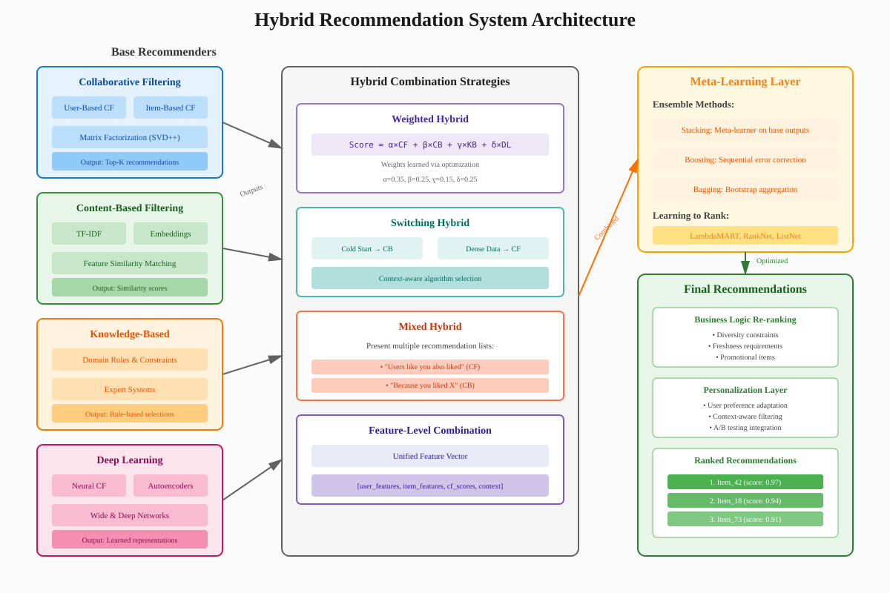

Recommendation Systems: From Theory to Implementation
📚 Quick Navigation
- Introduction
- Core Concepts
- Types of Recommendation Systems
- Collaborative Filtering
- Content-Based Filtering
- Hybrid Approaches
- Evaluation Metrics
- Implementation Strategies
- Real-World Applications
- Advanced Techniques
- References & Further Reading
Introduction
Recommendation systems are sophisticated algorithms that predict user preferences and suggest relevant items, transforming how we discover content, products, and services in the digital age. Unlike traditional search engines where users know what they're looking for, recommendation systems understand implicit user needs and provide personalized suggestions.

Key Distinctions from Search Engines:
- Semantic Understanding: Recommendation systems interpret user intent beyond explicit queries
- Personalization: Suggestions are tailored to individual user preferences and context
- Discovery Focus: Help users find items they didn't know they wanted
- Context Awareness: Consider time, location, mood, and historical behavior
Why Recommendation Systems Matter:
- Information Overload: With YouTube uploading 300 hours of video per minute, discovery becomes essential
- Business Value: Netflix attributes 80% of watched content to recommendations
- User Engagement: Amazon reports 35% of revenue from recommendation-driven purchases
- Personalized Experience: Spotify's Discover Weekly reaches 40 million users weekly
Core Concepts
Fundamental Components
User-Item Interaction Matrix:
The foundation of most recommendation systems is the user-item interaction matrix:
R = [r_ij] where r_ij represents interaction between user i and item j
Where interactions can be:
- Explicit Feedback: Ratings, reviews, likes/dislikes
- Implicit Feedback: Views, clicks, purchase history, dwell time
- Contextual Signals: Time of interaction, device type, location
Mathematical Foundations
Prediction Problem:
r̂_ui = f(u, i, Θ)
Where:
- r̂_ui = predicted rating for user u and item i
- f = prediction function
- Θ = model parameters
Optimization Objective:
min_Θ Σ(r_ui - r̂_ui)² + λ||Θ||²
Where:
- First term = prediction error
- Second term = regularization to prevent overfitting
- λ = regularization parameter
Key Challenges
Cold Start Problem:
- New User Cold Start: No historical data for new users
- New Item Cold Start: No interaction data for new items
- System Cold Start: Bootstrapping new recommendation systems
Data Sparsity:
- Most users interact with tiny fraction of available items
- Typical interaction density < 1% in large systems
- Requires sophisticated techniques to handle missing data
Scalability Requirements:
- Real-time Processing: Sub-second response times expected
- Large Scale: Millions of users, billions of items
- Dynamic Updates: Continuous model updates with new data
Types of Recommendation Systems
Overview of Approaches
Recommendation systems can be broadly categorized into three main approaches, each with distinct advantages and use cases:

1. Collaborative Filtering:
- User-Based: Find similar users, recommend what they liked
- Item-Based: Find similar items to what user previously liked
- Matrix Factorization: Decompose user-item matrix into latent factors
2. Content-Based Filtering:
- Feature Extraction: Analyze item characteristics
- Profile Learning: Build user preference profiles
- Similarity Matching: Match user profiles with item features
3. Hybrid Systems:
- Weighted Combination: Blend multiple algorithm outputs
- Switching: Choose algorithm based on situation
- Mixed: Present results from different algorithms together
- Feature Combination: Use features from multiple approaches
Comparison Matrix
| Approach | Strengths | Weaknesses | Best Use Cases |
|---|---|---|---|
| Collaborative Filtering | No domain knowledge needed, discovers patterns | Cold start problem, sparsity issues | E-commerce, streaming services |
| Content-Based | No cold start for items, transparency | Limited discovery, requires features | News, documentation, articles |
| Hybrid | Combines strengths, robust performance | Complex implementation, higher cost | Large-scale platforms |
Collaborative Filtering
User-Based Collaborative Filtering
Algorithm Overview:
- Compute user similarity scores
- Identify k-nearest neighbors
- Predict ratings based on neighbor preferences
Similarity Metrics:
Pearson Correlation:
sim(u,v) = Σ(r_ui - r̄_u)(r_vi - r̄_v) / √[Σ(r_ui - r̄_u)² × Σ(r_vi - r̄_v)²]
Cosine Similarity:
sim(u,v) = cos(θ) = u·v / (||u|| × ||v||)
Prediction Formula:
r̂_ui = r̄_u + Σ(sim(u,v) × (r_vi - r̄_v)) / Σ|sim(u,v)|
Item-Based Collaborative Filtering
Advantages over User-Based:
- Stability: Item similarities change less frequently than user preferences
- Precomputation: Can compute item similarities offline
- Scalability: Better performance with many users
Implementation Steps:
- Build item-item similarity matrix
- For target user and item, find similar items user has rated
- Aggregate ratings weighted by similarity
Matrix Factorization Techniques
Singular Value Decomposition (SVD):
R ≈ U × Σ × V^T
Where:
- U = user feature matrix
- Σ = diagonal matrix of singular values
- V = item feature matrix
Non-Negative Matrix Factorization (NMF):
R ≈ W × H
Where:
- W = user factor matrix (non-negative)
- H = item factor matrix (non-negative)
Alternating Least Squares (ALS):
Optimization approach alternating between fixing user factors and item factors:
min Σ(r_ui - x_u^T y_i)² + λ(||x_u||² + ||y_i||²)
Content-Based Filtering
Feature Extraction Techniques

Text Features:
- TF-IDF Vectorization: Weight terms by frequency and uniqueness
- Word Embeddings: Dense vector representations (Word2Vec, GloVe)
- Topic Modeling: LDA, LSA for discovering latent topics
Image Features:
- CNN Features: Pre-trained models (ResNet, VGG) for feature extraction
- Color Histograms: Distribution of color values
- Object Detection: Identify objects and scenes
Audio Features:
- MFCCs: Mel-frequency cepstral coefficients
- Spectral Features: Frequency domain characteristics
- Rhythm Patterns: Tempo and beat analysis
Profile Building
User Profile Construction:
P_u = Σ(w_i × f_i) / Σw_i
Where:
- P_u = user profile vector
- w_i = weight for item i (rating, interaction strength)
- f_i = feature vector for item i
Profile Update Strategies:
- Incremental Updates: Adjust profile with each interaction
- Sliding Window: Consider only recent n interactions
- Decay Functions: Weight recent interactions more heavily
Similarity Computation
Vector Space Model:
Items and user profiles represented as vectors in feature space:
similarity(profile, item) = cos(θ) = (profile · item) / (||profile|| × ||item||)
Advanced Similarity Metrics:
- Jaccard Similarity: For binary features
- Euclidean Distance: For continuous features
- Mahalanobis Distance: Accounts for feature correlations
Hybrid Approaches
Architecture Patterns

Weighted Hybrid:
score_hybrid = α × score_CF + β × score_CB + γ × score_knowledge
Where α + β + γ = 1
Switching Hybrid:
if confidence_CF > threshold:
return recommendation_CF
elif user_profile_complete:
return recommendation_CB
else:
return recommendation_popularity
Mixed Hybrid:
Present recommendations from different algorithms simultaneously:
- Top section: Collaborative filtering results
- Middle section: Content-based results
- Bottom section: Trending/popular items
Feature-Level Combination
Unified Feature Vector:
Combine features from multiple sources into single representation:
f_combined = [f_user, f_item, f_CF, f_context]
Deep Learning Integration:
- Neural Collaborative Filtering: Learn non-linear user-item interactions
- Wide & Deep Networks: Combine memorization and generalization
- Autoencoders: Dimensionality reduction and feature learning
Ensemble Methods
Stacking:
- Train base recommenders independently
- Use predictions as features for meta-learner
- Meta-learner produces final recommendations
Boosting:
Sequential training where each model corrects errors of previous:
F(x) = Σ α_i × f_i(x)
Bagging:
Train multiple models on data subsets, aggregate predictions:
prediction = median([model_1, model_2, ..., model_n])
Evaluation Metrics
Accuracy Metrics
Rating Prediction Metrics:
Mean Absolute Error (MAE):
MAE = Σ|r_ui - r̂_ui| / n
Root Mean Square Error (RMSE):
RMSE = √(Σ(r_ui - r̂_ui)² / n)
Ranking Metrics
Precision@k:
Precision@k = |relevant_items ∩ recommended_items| / k
Recall@k:
Recall@k = |relevant_items ∩ recommended_items| / |relevant_items|
Normalized Discounted Cumulative Gain (NDCG):
NDCG@k = DCG@k / IDCG@k
Where:
DCG@k = Σ(2^rel_i - 1) / log₂(i + 1)
Beyond Accuracy Metrics
Coverage:
Coverage = |unique_items_recommended| / |total_items|
Diversity:
Diversity = avg_pairwise_distance(recommended_items)
Novelty:
Novelty = -Σ(p(i) × log p(i))
Where p(i) = probability of item i being known
Serendipity:
Combines relevance with unexpectedness:
Serendipity = relevant_unexpected_items / total_recommendations
Implementation Strategies
System Architecture
Offline Pipeline:
- Data Collection: Aggregate user interactions
- Feature Engineering: Extract and transform features
- Model Training: Train recommendation models
- Evaluation: Validate model performance
- Model Export: Prepare for production deployment
Online Serving:
- Request Processing: Parse user context
- Candidate Generation: Retrieve potential items
- Ranking: Score and order candidates
- Post-Processing: Apply business rules
- Response Formation: Return recommendations
Scalability Techniques
Approximate Nearest Neighbors:
- LSH (Locality-Sensitive Hashing): Hash similar items to same buckets
- Annoy: Tree-based approximate nearest neighbor search
- Faiss: Facebook's similarity search library
Distributed Computing:
- Spark MLlib: Distributed collaborative filtering
- TensorFlow: Distributed deep learning
- Ray: Distributed training and serving
Production Considerations
A/B Testing Framework:
def get_recommendations(user_id):
if hash(user_id) % 100 < experiment_percentage:
return new_algorithm(user_id)
else:
return baseline_algorithm(user_id)
Model Versioning:
- Track model artifacts and hyperparameters
- Enable rollback capabilities
- Monitor performance across versions
Real-time Updates:
- Stream Processing: Apache Kafka, Kinesis for event streams
- Online Learning: Update models with incoming data
- Feature Stores: Centralized feature management
Real-World Applications
E-commerce (Amazon)
Multi-Algorithm Approach:
- Item-to-Item CF: "Customers who bought X also bought Y"
- Personalized Recommendations: Based on browsing history
- Temporal Patterns: Seasonal and trend-based suggestions
Business Impact:
- 35% of revenue from recommendations
- 60% higher conversion for recommended products
- Increased average order value by 29%
Streaming Services (Netflix)
Row-Based Organization:
- Each row represents different algorithm or theme
- "Because you watched X" - content-based
- "Trending Now" - popularity-based
- "Top Picks for You" - hybrid personalized
Personalization Depth:
- Artwork personalization based on viewing history
- Trailer selection customized per user
- Episode ordering for anthology series
Music Platforms (Spotify)
Discover Weekly Algorithm:
- Analyze user's listening history
- Find users with similar taste
- Identify songs in their playlists not in user's history
- Apply audio analysis for diversity
- Generate 30-song playlist weekly
Audio Features Integration:
- Tempo, key, loudness, acousticness
- Create smooth transitions between songs
- Balance familiarity with discovery
Social Media (YouTube)
Two-Stage Recommendation:
Candidate Generation:
- Deep neural network processes user history
- Generates hundreds of candidates from millions
Ranking:
- More features including watch time prediction
- Optimizes for user satisfaction metrics
- Considers creator diversity
News & Content (Google News)
Challenges Addressed:
- Recency: Fresh content prioritization
- Diversity: Avoid filter bubbles
- Credibility: Source authority weighting
- Personalization: Balance with editorial quality
Advanced Techniques
Deep Learning Approaches
Neural Collaborative Filtering (NCF):
# Architecture overview
user_embedding = Embedding(num_users, embedding_dim)
item_embedding = Embedding(num_items, embedding_dim)
concatenated = Concatenate()([user_embedding, item_embedding])
dense_1 = Dense(64, activation='relu')(concatenated)
dense_2 = Dense(32, activation='relu')(dense_1)
output = Dense(1, activation='sigmoid')(dense_2)
Recurrent Neural Networks for Sequential Data:
- Model user behavior as sequence
- LSTM/GRU for capturing long-term dependencies
- Attention mechanisms for relevance weighting
Graph Neural Networks:
- User-item interactions as bipartite graph
- Message passing for collaborative signal
- GraphSAGE, GAT for recommendation
Reinforcement Learning
Multi-Armed Bandits:
Explore-Exploit Trade-off:
ε-greedy: Random exploration with probability ε
UCB: Choose item with highest upper confidence bound
Thompson Sampling: Probabilistic exploration
Deep Reinforcement Learning:
- State: User features and context
- Action: Item to recommend
- Reward: User engagement signal
- Policy: Learned recommendation strategy
Explainable Recommendations
Explanation Types:
- User-Based: "Users like you also liked..."
- Item-Based: "Based on your interest in..."
- Feature-Based: "Recommended because: genre=comedy, year=2023"
- Knowledge-Based: "Matches your preference for..."
Attention Mechanisms:
Visualize which features influenced recommendation:
attention_weights = softmax(Q × K^T / √d)
explanation = attention_weights × V
Privacy-Preserving Techniques
Federated Learning:
- Train models on user devices
- Only share model updates, not data
- Aggregate updates centrally
Differential Privacy:
f'(x) = f(x) + Laplace(0, Δf/ε)
Where:
- f(x) = true query result
- Δf = sensitivity of query
- ε = privacy budget
Homomorphic Encryption:
- Compute on encrypted data
- Recommendations without seeing preferences
- Higher computational overhead
🔗 References & Further Reading
Academic Papers
- Matrix Factorization Techniques for Recommender Systems - Comprehensive overview of collaborative filtering methods
- Deep Learning based Recommender System: A Survey - State-of-the-art deep learning approaches
- Wide & Deep Learning for Recommender Systems - Google's hybrid architecture
Open Source Frameworks
- Surprise - Python scikit for recommendation systems
- LightFM - Hybrid recommendation algorithms
- RecBole - Unified framework with 73+ models
Industry Resources
- Netflix Tech Blog - Engineering insights from Netflix
- Spotify Engineering - Music recommendation techniques
- Amazon Science - E-commerce recommendation research
Courses & Tutorials
- Google's Recommendation Systems Course - Comprehensive ML course
- Fast.ai Collaborative Filtering - Practical deep learning approach
- Stanford CS246: Mining Massive Datasets - Academic foundation
Hugging Face Models
- 🤗 microsoft/unirec - Universal recommendation model
- 🤗 TIGER-Lab/RecFormer - Transformer-based recommendations
- 🤗 SASRec-pytorch - Self-attentive sequential recommendation